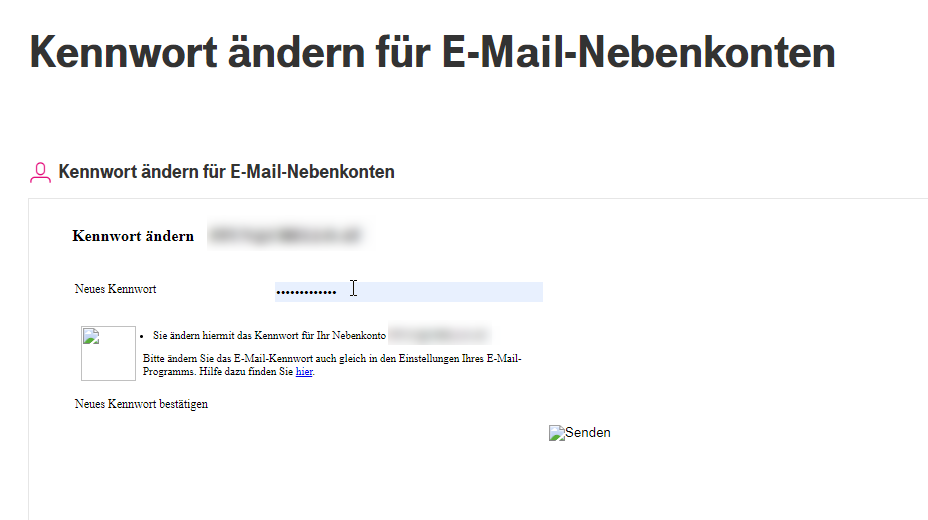

"Kennwort ändern für E-Mail-Nebenkonten" funktioniert nicht, da es dazu keine Eingabefelder für "Neues Passwort" und "Passwort bestätigen" gibt - siehe beigefügte Datei.
Da ich prinzipiell kein Facebook und WhatsApp verwende, habe ich keine Möglichkeit, mit Magenta zu kommunizieren - Email Adresse finde ich keine.
Habe es mit 3 verschiedenen Browsern versucht, aber bei allen dasselbe Ergebnis.
Vielleicht kann ja wer helfen.
Hi @albandit
danke für die Info, habe es soeben ausprobiert - hier dürfte etwas in der Darstellung nicht stimmen.
Es liegt also nicht an dir oder deinen Geräten.
Ich habe gerade aber herausgefunden, dass eine Änderung doch möglich ist, auch wenn es nicht schön aussieht.
Schau mal:

Das Textfeld wird zwar leider nicht schön dargestellt, aber hier kannst du dann mit der Maus hinklicken (Cursor ändert sich) und dein neues Kennwort eingeben.
Hoffe ich konnte dir damit weiterhelfen. Ich kümmere mich um ein Feedback an unsere zuständige Abteilung.
Mia_
Hallo !
Entweder bin ich blind oder ich finde diese Möglichkeit nicht :-(
Denn stehe vor dem Dilemma, dass ich Nebenkonto ändern will (MyMagenta) aber nichts finde, auch nicht im Webmail !
Danke
Grundsätzlich musst du bei Mein Magenta einsteigen und dann auf Übersicht der Einstellungen gehen. Dort sollte es den Punkt "Kennwörter für E-Mail Nebenkonten" oder ähnlich ausformuliert geben. Fehlt der nicht würde ich das mal per Hotline oder Whatsapp melden, weil das ist nicht normal. Aber üblicherweise ist der dort, in der Übersicht, nicht unter E-Mail und Servicecenter (wieso kann ich dir auch nicht sagen). Achja und wenn der Punkt bei dir fehlt - zur Sicherheit vielleicht einen anderen Browser noch testen. Oft liegts auch nur daran.
Wenn du dann mal soweit kommst, hast du meistens den Darstellungsfehler, aber da gibts noch eine einfachere Lösung als mit der Maus das Feld suchen - mit der Tabulator Taste einfach durchspringen und die Kennwörter entsprechend vergeben.